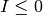
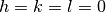
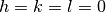

StatisticsOfPeaksWorkspace dialog.
Table of Contents
| Name | Direction | Type | Default | Description |
|---|---|---|---|---|
| InputWorkspace | Input | PeaksWorkspace | Mandatory | An input PeaksWorkspace with an instrument. |
| PointGroup | Input | string | -1 | Which point group applies to this crystal? Allowed values: [‘-1’, ‘-3’, ‘-3 r’, ‘-31m’, ‘-3m’, ‘-3m r’, ‘-3m1’, ‘-4’, ‘-42m’, ‘-43m’, ‘-4m2’, ‘-6’, ‘-62m’, ‘-6m2’, ‘1’, ‘112’, ‘112/m’, ‘11m’, ‘2’, ‘2/m’, ‘222’, ‘23’, ‘2mm’, ‘3’, ‘3 r’, ‘312’, ‘31m’, ‘32’, ‘32 r’, ‘321’, ‘3m’, ‘3m r’, ‘3m1’, ‘4’, ‘4/m’, ‘4/mmm’, ‘422’, ‘432’, ‘4mm’, ‘6’, ‘6/m’, ‘6/mmm’, ‘622’, ‘6mm’, ‘m’, ‘m-3’, ‘m-3m’, ‘m2m’, ‘mm2’, ‘mmm’, ‘-1 (Triclinic)’, ‘-3 (Trigonal - Hexagonal)’, ‘-3 r (Trigonal - Rhombohedral)’, ‘-31m (Trigonal - Hexagonal)’, ‘-3m (Trigonal - Hexagonal)’, ‘-3m r (Trigonal - Rhombohedral)’, ‘-3m1 (Trigonal - Hexagonal)’, ‘-4 (Tetragonal)’, ‘-42m (Tetragonal)’, ‘-43m (Cubic)’, ‘-4m2 (Tetragonal)’, ‘-6 (Hexagonal)’, ‘-62m (Hexagonal)’, ‘-6m2 (Hexagonal)’, ‘1 (Triclinic)’, ‘112 (Monoclinic, unique axis c)’, ‘112/m (Monoclinic, unique axis c)’, ‘11m (Monoclinic, unique axis c)’, ‘2 (Monoclinic, unique axis b)’, ‘2/m (Monoclinic, unique axis b)’, ‘222 (Orthorhombic)’, ‘23 (Cubic)’, ‘2mm (Orthorhombic)’, ‘3 (Trigonal - Hexagonal)’, ‘3 r (Trigonal - Rhombohedral)’, ‘312 (Trigonal - Hexagonal)’, ‘31m (Trigonal - Hexagonal)’, ‘32 (Trigonal - Hexagonal)’, ‘32 r (Trigonal - Rhombohedral)’, ‘321 (Trigonal - Hexagonal)’, ‘3m (Trigonal - Hexagonal)’, ‘3m r (Trigonal - Rhombohedral)’, ‘3m1 (Trigonal - Hexagonal)’, ‘4 (Tetragonal)’, ‘4/m (Tetragonal)’, ‘4/mmm (Tetragonal)’, ‘422 (Tetragonal)’, ‘432 (Cubic)’, ‘4mm (Tetragonal)’, ‘6 (Hexagonal)’, ‘6/m (Hexagonal)’, ‘6/mmm (Hexagonal)’, ‘622 (Hexagonal)’, ‘6mm (Hexagonal)’, ‘m (Monoclinic, unique axis b)’, ‘m-3 (Cubic)’, ‘m-3m (Cubic)’, ‘m2m (Orthorhombic)’, ‘mm2 (Orthorhombic)’, ‘mmm (Orthorhombic)’, ‘222 (Orthorombic)’, ‘mm2 (Orthorombic)’, ‘2mm (Orthorombic)’, ‘m2m (Orthorombic)’, ‘mmm (Orthorombic)’] |
| LatticeCentering | Input | string | P | Appropriate lattice centering for the peaks. Allowed values: [‘P’, ‘C’, ‘A’, ‘B’, ‘I’, ‘F’, ‘Robv’, ‘Rrev’, ‘H’, ‘Primitive’, ‘C-face centred’, ‘A-face centred’, ‘B-face centred’, ‘Body centred’, ‘All-face centred’, ‘Rhombohedrally centred, obverse’, ‘Rhombohedrally centred, reverse’, ‘Hexagonally centred, reverse’] |
| OutputWorkspace | Output | PeaksWorkspace | Mandatory | Output PeaksWorkspace |
| StatisticsTable | Output | TableWorkspace | StatisticsTable | An output table workspace for the statistics of the peaks. |
| SortBy | Input | string | ResolutionShell | Sort the peaks by resolution shell in d-Spacing(default), bank, run number, or only overall statistics. Allowed values: [‘ResolutionShell’, ‘Bank’, ‘RunNumber’, ‘Overall’] |
| EquivalentIntensities | Input | string | Mean | Replace intensities by mean(default), or median. Allowed values: [‘Mean’, ‘Median’] |
| SigmaCritical | Input | number | 3 | Removes peaks whose intensity deviates more than SigmaCritical from the mean (or median). |
| EquivalentsWorkspace | Output | MatrixWorkspace | EquivalentIntensities | Output Equivalent Intensities |
| WeightedZScore | Input | boolean | False | Use weighted ZScore if true. If false, standard ZScore (default). |
Statistics of the Peaks Workspaces are calculated for all peaks and by default for resolution shell(d-Spacing). There is a SortBy option to change this to by orientation (RunNumber) or by Anger camera (bank) or only do all peaks. This algorithm calls SortHKL v1, so more details are in the documentation for that algorithm.
After removing invalid peaks with ,  and ,
the peaks are assigned to their respective unique reflection so that each theoretically present
reflection may have
and ,
the peaks are assigned to their respective unique reflection so that each theoretically present
reflection may have  observations ( can be zero). The number of unique reflections
which have at least one observation can be labeled
observations ( can be zero). The number of unique reflections
which have at least one observation can be labeled  .
.
Currently the satellite peaks are removed so only peaks with  are used in the statistics.
In the future, this algorithm will also calculate statistics for these peaks.
are used in the statistics.
In the future, this algorithm will also calculate statistics for these peaks.
The intensities of peaks in each reflection are checked for outliers, which are removed. Outliers
in this context are peaks with an intensity that deviates more than  from the
mean of the reflection, where
from the
mean of the reflection, where  is the standard deviation of the peak intensities.
is the standard deviation of the peak intensities.
Formulas for the statistics columns are:
In the following, all sums over hkl extend only over unique reflections with more than one observation! Output is percentages.
where
is the average of j multiple measurements of the n equivalent reflections.
Example - an example of running StatisticsOfPeaksWorkspace with PointGroup option.
# Load example peak data and find cell
peaks = LoadIsawPeaks(Filename=r'Peaks5637.integrate')
FindUBUsingFFT(peaks, MinD=0.25, MaxD=10, Tolerance=0.2)
SelectCellWithForm(peaks, FormNumber=9, Apply=True, Tolerance=0.15)
OptimizeLatticeForCellType(peaks,
CellType='Hexagonal', Apply=True, Tolerance=0.2)
# Run the SortHKL algorithm
sorted, statistics_table, equivI = StatisticsOfPeaksWorkspace(peaks, PointGroup='-3m1 (Trigonal - Hexagonal)',
LatticeCentering='Rhombohedrally centred, obverse',
SortBy='Overall')
statistics = statistics_table.row(0)
peak = sorted.getPeak(0)
print("HKL of first peak in table {} {} {}".format(peak.getH(),peak.getK(),peak.getL()))
print("Multiplicity = %.2f" % statistics['Multiplicity'])
print("Resolution Min = %.2f" % statistics['Resolution Min'])
print("Resolution Max = %.2f" % statistics['Resolution Max'])
print("No. of Unique Reflections = %i" % statistics['No. of Unique Reflections'])
print("Mean ((I)/sd(I)) = %.2f" % statistics['Mean ((I)/sd(I))'])
print("Rmerge = %.2f" % statistics['Rmerge'])
print("Rpim = %.2f" % statistics['Rpim'])
Output:
HKL of first peak in table -10.0 5.0 42.0
Multiplicity = 1.21
Resolution Min = 0.21
Resolution Max = 2.08
No. of Unique Reflections = 337
Mean ((I)/sd(I)) = 27.51
Rmerge = 10.08
Rpim = 10.08
Categories: AlgorithmIndex | Crystal\Peaks | DataHandling\Text
C++ source: StatisticsOfPeaksWorkspace.cpp (last modified: 2019-06-04)
C++ header: StatisticsOfPeaksWorkspace.h (last modified: 2018-10-05)